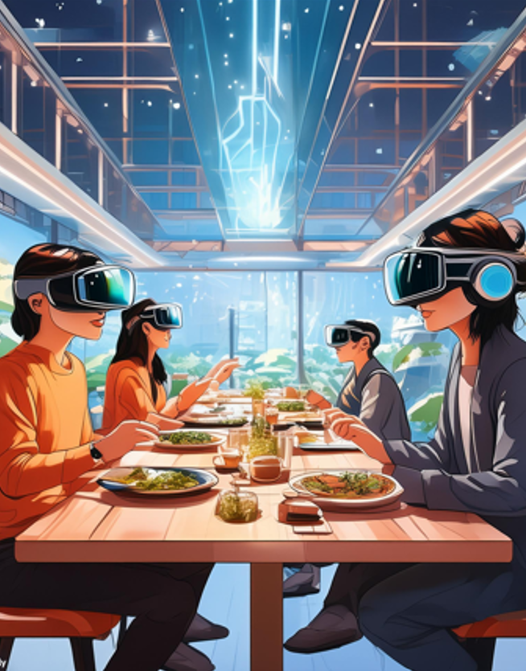

テーマ
「友人と楽しく食事をする」

- 30年後の未来を予想し、AIシェフやロボットウェイター、VRによる技術の進化によって生まれたレストラン
- 新しい体験や高級感を求める傾向が強い高所得層や忙しいスケジュールの中で効率的かつ高品質なサービスを求める人々がターゲット
- 未来の技術を駆使して顧客に新しい食事体験を提供し、効率的でパーソナライズされたサービスを実現
顧客の好みや健康状態に応じたメニュー提案ができるデバイスを設置し、一人ひとりの食事体験が最適化されるよう工夫しました。特にアレルギーや嗜好に配慮した提案で、安心して食事を楽しめるようにしています。また、VRデバイスを使い、食事中に異なる国や空間にいるような臨場感を楽しめる演出を行いました。